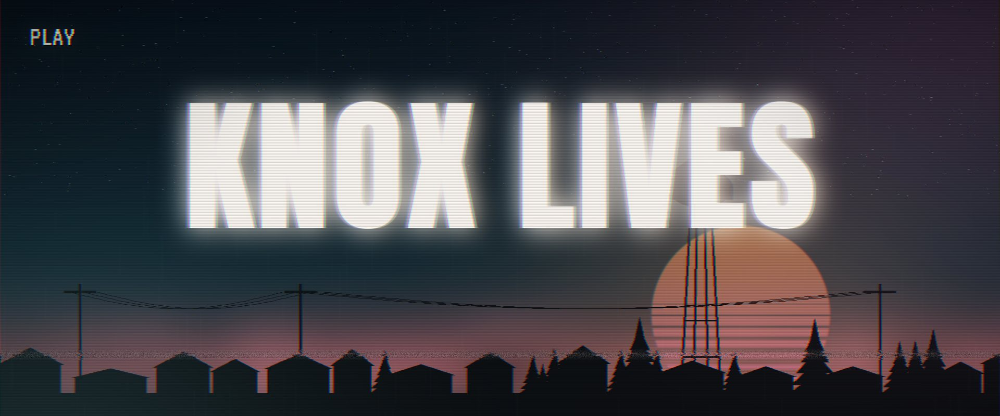
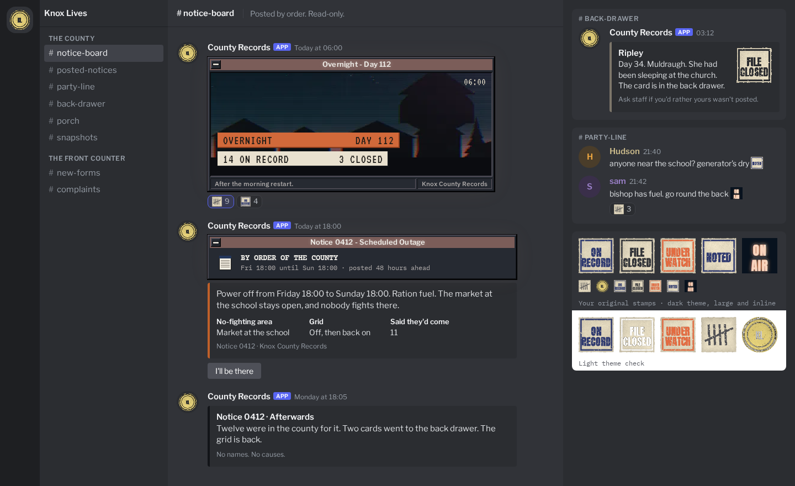

Knox Lives: The projects · The server

Knox County, Kentucky · July 1993
A small, vetted Project Zomboid server where one world runs for months, the county falls apart and is rebuilt by the people living in it, and a record remembers who they were. This page explains the whole thing from the start, for anyone joining the admin team.
Top to bottom takes about 30 minutes. Each section starts with the short version; the detail opens behind More >>. Anything in pencil, like this, is a suggestion for the admins to accept or change.
Nothing technical. The code, the mods and the fixes are the workshop's job. The admins decide how the county runs: when things open, how leadership forms, what counts as fair. Those choices are gathered in the meeting.
The power fails. The Army seals the county. Sixteen people start in Muldraugh with one safe building and nothing else. Over months they clear towns, win them, light them again, and learn to live on what they grow, make and trade. The map opens a piece at a time, so there is always somewhere new to reach.
The same world runs for months, told in chapters. What people build stays built.
No skill journal. A new character arrives with their own story; the old one's file closes.
Fighting is on across the open county from the start. Safe ground exists, and grows as the county organises.
Power and water are restored town by town, as real projects with supplies, skills and a night defending the station.
Builders, smiths, farmers, medics, mechanics, hunters, guards and traders. No shop sells anything; every trade is between residents.
Every resident has a file. Heroes and outlaws alike. The weekly county news tells what happened. Honours carry to the next life; wealth never does.
The county opens slowly so nobody has seen everything in the first evening. The admins decide when each stage begins. The timings in pencil are only suggestions to start the discussion.
| Stage | What is open | What the county is working toward | Residents | When |
|---|---|---|---|---|
| Season Zero | Muldraugh, then West Point, Rosewood and March Ridge | Survive. Hold Muldraugh's community centre. Clear and win a centre in a second town. Bring Muldraugh's power back. | 16 to start | go-live; about 2 to 4 real weeks |
| Chapter 1: the river road | Fallas Lake, Riverside | Keep one town lit for a week. The first steward. Farms start to matter. | Room for more, who arrive in the new towns | when one town has stayed lit 7 days |
| Chapter 2: the western roads | Echo Creek, Ekron, Brandenburg, Irvington | Two towns lit, water back in one. Booked disputes between groups. Renewable fuel. | More again | two towns lit and water in one |
| Chapter 3: the highway north | Valley Station, then Louisville | Three towns lit, two with stewards. The county feeds and fuels itself. The Louisville Run. | The full county | three towns lit, two stewarded |
Muldraugh is the only town that starts with a community centre. It is safe ground from day one: anyone in trouble runs there.
Every other town's centre has to be chosen, cleared and held by the residents. They pick the building, clear the dead, hold it, and the county then recognises it: it becomes safe ground and the town's new heart.
A centre belongs to everyone, never to a group. No faction controls one. Later in the run, groups that have made a town their home may fight over the town itself in a booked dispute, but the centre stays neutral.
Each won centre widens the safe ground and gives new arrivals somewhere to start, which is how the county grows past 16.
Each chapter, new food and fuel in the world become rarer, so by Chapter 3 the county lives mostly on farms, fishing, crafts and trade.
But every newly opened town is a fresh place to resupply: its shops and houses have never been opened, so reaching a new town always pays.
Seeds are never made rarer. Farming is always the way out.
Time in game: about 10 to 15 in-game days pass in a real week, depending on how much people play. A day in game lasts two real hours.
The proposal: in time, the community's Discord (SurvivorZA) is renamed and refitted as Knox Lives. The name, when it changes and how it is announced are for the admins and David to decide together (the meeting, choice 11). Whatever the name, past players are told plainly: this is a new direction. A slower, deeper server with a record, one long world, real stakes and few rules. People read the overview and the intent, then apply.
The announcement, the overview and the rules on Discord.
Press Apply. Two short forms (about 10 minutes).
Discord and Steam checked automatically: account age, bans, owns the game.
Approve, ask a question, or refuse quietly.
The login arrives by private message. A 4-hour new-arrival shield in game.
| Question | What the admins look for |
|---|---|
| Your Steam profile and Discord name | A real account, bound to one person. |
| The character's name, and one line about who they were before July 1993 | Someone who thinks of a character as a person with a past. |
| How long you have played Project Zomboid, and on which servers | Experience, and whether past admins would vouch. |
| How many evenings a week you can usually play, and your time zone | Someone who will be seen. A county of 16 needs regulars. |
| Which trade would you take up first, and why? | Someone who wants to be needed by others. |
| You find a house with a full pantry and nobody claims it. A newcomer arrives starving. What do you do? | No right answer. It shows how they think about others. |
| Your group lost a fight fairly. What happens next? | Takes a loss as part of the story, not a reason to rage or quit. |
| What would make you leave a server? | Honest expectations; a chance to say what we can't offer. |
| Who invited you, if anyone? | Someone to vouch, and how people find us. |
| Have you read the County Charter, and do you agree to it? (yes / no) | A clear yes before anything else. |
Before the real world starts, a trial season runs on the server for about three weeks, then the world is wiped. Anyone who wants to help can apply as a tester, knowing their progress will not carry over.
/knox bug opens a short form (what happened, where, roughly when). The bot files it in a bug-report forum with the county's day, and sends the admins the server's log of that player's last half hour./knox feedback, filed the same way, kept apart from bugs.built: the two-page form, the tester track, /knox bug and /knox feedback; first real use is the trial
The county is paced so nobody runs out of things to do in the first few hours. Each turn of the loop opens more map, more trades and harder living.
Start in an open town with little.
Food, shelter, the dead, other people.
Groups, trades, a centre won.
Power and water back in a town.
The Army steps back; new towns open. Round again.
Adds: Muldraugh first; three more southern towns after two weeks. The Army's line around them.
How play feels: loot is still around, cars still have a little fuel, fridges still hum until the grid fails (somewhere between day 14 and day 60). Everyone meets in Muldraugh. PvP is on, but the south is the safer half.
The goal: hold together, win a second centre, light Muldraugh.
Adds: Fallas Lake (fish, water) and Riverside (factories for the makers). New arrivals come in by story: out of hiding, Army evacuees, by trade.
How play feels: food in new houses is noticeably rarer; farms and fishing start to matter. Car parts begin to wear. The first steward keeps a town's lights on.
The goal: keep a town lit, feed people.
Adds: four western towns: farm country, a college, the county seat, a cattle town. The big rig. Renewable fuel from farms.
How play feels: long trips with real risk, trading between towns, water back in one town. Groups can book disputes over ground.
The goal: two towns lit, water restored, fuel that grows.
Adds: Valley Station, then Louisville a week later: the city the Army left behind. Restocked by hand once a season; nobody may settle there.
How play feels: little new food anywhere; the county lives on what it makes. The Run to Louisville is the big shared expedition.
The goal: a self-sufficient county.
The full mod list, arranged by the chapter each mod arrives in, is in Mods.
Every event is posted on Discord as a numbered notice with an "I'll be there" button, warned in game, run by the server, and recapped quietly after.
| Dial | Season Zero | How it moves |
|---|---|---|
| Zombies | Normal numbers, rising to one and a half times by day 60 | Few come back once cleared, fewer each chapter, never none. Closed towns keep their full numbers, so each opening is a push. |
| Food in new houses | The game's normal | Down each chapter: about two thirds, a third, a sixth, then almost nothing. Seeds never go down. |
| Medicine | The game's normal | Down gently each chapter; herbal medicine fills the gap. |
| Fuel | Pumps up to 70% full; a found car holds about 12 litres | Pumps emptier and cars drier each chapter; under 1 litre by Chapter 3. Renewable fuel from Chapter 2. |
| Power and water | On, until a day between 14 and 60 | Back town by town, by the residents. |
| Skills | Learnt one and a half times faster than the game's normal | Fixed; death is final, so skills are precious. |
| Time | A day lasts 2 real hours | The world pauses when nobody is on. |
| Fights between players | Damage reduced (melee about half, guns about three quarters) | Tuned on the test server so a fight is dangerous but not instant. |
| Residents | 16 | More places as each town's centre is won. |
The mods add a few hundred settings of their own; each is set to fit the county and checked by the workshop. The admins only need the dials above.
This is the backbone of the whole server, so it is built as our own mod, KnoxWarden: Grid, with our own objects and art. It ships its own updates on our schedule, so a stranger's mod update can never break the county's power.
all of this is designed, none of it built yet; it is the first thing built and tested
Until a town is lit, and anywhere it never will be, people use generators (loud, they draw the dead), battery banks and wood or waste-oil generators, solar once it is proven, rain barrels, roof tanks and wells. These power a home, a farm or a workshop, never a whole town. That is what the grid is for. Moving into an unlit town, a group brings a generator first.
| Upkeep each real week | Power, per lit town | Water, per watered town |
|---|---|---|
| Fuel | 40 litres of petrol (half that once the county's power station is restored) | none |
| Parts | 5 electronics scrap, 2 electric wire | 2 bleach (chlorine for the plant) |
| Who pays | Anyone may put supplies in; the record names who did. The town's steward answers for it. | |
| If it's missed | Two days of warnings, then the town goes dark. Dark for three days and the steward loses the town. | |
Every number on this page is a dial the admins can turn. The full event is laid out in the grid event.
There are two ways up. One is about holding ground, the other about a trade. Both end in the same place: keeping a town alive. Nobody has to join anything.
| Ground | Trade | What it takes | What it gets | |
|---|---|---|---|---|
| Start | Camp: two or more people and a home | Workshop: one or two people, a named trade, a place of business | Nothing. Just say so. | A name on the county map if asked. No special rights. |
| Recognised | Holding: a shared home held a week, walls, a store of food and water | Guild: a few lines saying what it offers, roles, a trading post | 4 active members (4 hours' play in 2 weeks) | Safe ground around its grounds or market; its own notices; can call votes; can book disputes; can register premises. |
| The top | Principality: a holding that stewards a town | Guildhall town: a guild that stewards a town | Keep a town's power on | Runs the town (inside the rules): its market days, who may settle, bounties, sentences. |
Up to 4 people from different groups (or none) working together without merging. Allies on the record. No zone.
Residents who won't join a big group write a short charter together: neutral ground, free trade, common defence, no masters. At 4 members it is recognised like a guild. A trade can also stand alone: a one-person workshop like a car armourer.
Country no one keeps, drawn after the first month. No safe ground and no marks filed: the outlaw's and the drifter's ground. Claimed homes are still never raided.
Shops, garages and yards can't be claimed in the game, so a group registers up to two. Taking from them is a crime; breaking in is griefing.
The Merchants Guild: four friends start in Muldraugh, make a faction, file a charter ("repairs, fuel runs, building, escorts"), and register the logging yard as their trading post with a safe market at its gate. When Muldraugh's power comes back mostly through their work, they are offered the town. They run the centre, open to all, and the town votes on market days.
Valkyrie's Spear: one player's car workshop inside the guild: armour, sales, a chop shop. Selling cars is fine; stripping someone else's car is not.
The rule as agreed: whoever keeps a town's power on stewards it. The group that did most of the work is offered the town; if two have a fair claim, the town's residents vote. These are the parts still to settle, and they are in the meeting:
| Question | Options | Suggested start |
|---|---|---|
| How is a town's leader chosen? | The work decides (record of who supplied and defended) · a town vote every time · players sort it out themselves | the work decides; a vote only when contested |
| How is leadership recognised? | A notice, a title on the record, a sign at the centre, the weekly news | all four; it costs nothing |
| Does honour count? | Honours on a player's record (kept across lives) weigh in a contested vote · they don't | shown on the vote, not counted |
| Does wealth count? | Buying a town · never | never: wealth never carries a town |
| Who belongs to a town? | Where your home is · in-game time spent there · you name a home town | home first, otherwise named; changed once a week |
| Peace when visiting a town | A town's own non-fighting rules for visitors on business · open ground | markets and centres are safe; a steward may add a visitors' peace by vote |
| Can a player-built base be a safehouse? | Yes, on request to KnoxWarden, checked by an admin · no | yes, especially in the Badlands |
| Part | State |
|---|---|
| Safe zones, the new-arrival shield, logging hits, deaths and combat logs | built needs to be moved onto the game's own no-fighting zones so it holds |
| Power and water failing and returning town by town; spoilage | not built first in line |
| The Army line, chapters opening, spawns by town | not built |
| Group register, recognition, premises, votes, disputes | not built admins file by hand on Discord until it is |
| Sales ledger, the County Exchange, bounties and marks | not built admins file by hand until it is |
| Applications, restarts, backups, notices, the morning card, death cards | built in the Discord bot and the admin panel; tested off-server |
Everything the county does is meant to be automatic and logged: the admins see the full log; players see only what matters (a notice, a line in the news). Until a part is built, an admin does it by hand from Discord.
The county fixes a handful of rules that protect the game. Everything else, the residents decide by vote. Playing a villain is allowed. Ruining the game for others is not.
The line between the two: a crime is answered by the players; griefing is answered by the admins. Two admins agree before anyone is removed.
A long, slow, social survival game with PvP on and permanent death. Few hours a week, many weeks. A character people will remember.
One page of rules in plain words, pinned in Discord and on the website, with the short version first. The game tells you when you enter safe ground. The rest you learn by living there.
Day one needs three ideas: PvP is on, run to the centre if in trouble, don't grief. Groups, the grid and trade come as the county reaches them, chapter by chapter.
The new-arrival shield, the community centre, other residents, /knox bug, and admins on Discord. A 4-hour shield, then you're one of us.
The game and KnoxWarden hold what they can automatically (safe ground, the shield, logging). Crimes are the players' business. Admins step in only for griefing, which is rare in a vetted group, and for the stage calls. The world unfolds on its own because the players write most of it: who leads, who trades, who hunts whom.
No game shop or computer trader ever sells anything. All trade is between people. Cash is worthless; what things are worth is up to the residents.
Yes. suggested Every community centre and market is a place where anyone, including a drifter, an independent or someone from the Badlands, can come and trade under its peace. A steward may refuse to serve a particular person; a town may not close its centre. A town with a closed border can still be traded with at its market. The price is up to the bartering.
the sales ledger (who sold what to whom) is designed but not built; until then a sale is logged by a Discord command
| What | How far it has got |
|---|---|
| The whole design | World, rules, groups, power and water, trade, the county's voice: written and agreed. |
| The mod list | Every mod downloaded and read, each checked for multiplayer problems and clashes. The full launch list loads together without errors in our server tools. Problem mods removed or fixed in our own fixer mod. |
| The admin panel and Discord bot | Built and tested on a PC: applications with two signatures, restarts with warnings, backups, numbered notices, the morning card, death cards, chat between game and Discord. |
| KnoxWarden | Early version: safe zones, new-arrival shield, logs of hits, deaths and combat logs. |
| The server | A hosted server in Johannesburg, close to launch. First boot comes after the audit and vetting now under way. |
| Not yet tested anywhere | Anything inside a running server. That starts now. |
Each town's return to power is a county event the admins help run. No code involved: the admins pick the night, announce it, and watch. Everything else is automatic.
| In plain words | |
|---|---|
| Where | At each town's substation (a real building found on the map), and for water the county's treatment plant, then each town's water tower. |
| How it goes off | On a day KnoxWarden picks between day 14 and day 60, the whole county loses power; water follows within a week. A radio warning goes out the day before. |
| When it comes back | When residents finish the steps above. The admins choose the evening of the switch-on night with the residents, so people can be there. |
| What it takes | Supplies (wire, electronics scrap, scrap and sheet metal, screws, bulbs, two car batteries, 100 litres of petrol to start), one resident with good electrical skill and one with mechanics or metalwork, 12 in-game hours of work, then a night holding off the hordes the noise draws. |
| What it means to maintain | Weekly fuel and parts. The town's steward answers for it; anyone may help. Parts come from the smiths and salvagers, fuel from the pumps, later from farms. |
| What it links to | Stewardship (who keeps it on runs the town) · the chapters (lit towns open the next one) · the trades (every repair part is someone's work) · the County Exchange (opens in the first lit town) · the news and the radio (every stage is announced). |
| The admins' part | Choose the switch-on evening, post the notice (the bot drafts it), be on hand. Optionally: decide when the county's power station or propane depots become projects. |
Every mod is there to make the county deeper: more trades, harder living, a world that feels lived in. Each was read in its own files and checked for multiplayer problems. Fixing a mod's faults is the workshop's job; deciding what goes in is the admins'.
Three period cars at launch from one maker (KI5), all real 1993 vehicles: the Chevrolet K-series farm truck, the Step-Van and the Toyota Hilux. They spawn where the game's own cars do, with their own armour. The big rig comes with Chapter 2's long roads, and parts that wear out (Roadworthy) with Chapter 1, so mechanics matter.
Why not a big car pack: dozens of modern or exotic cars break the 1993 county, add gigabytes to everyone's download, and come from many authors whose updates can clash. One maker, one shared library, few cars that fit.
The game's own guns at launch. Ammunition runs out like everything else, which makes it valuable. The plan for the trades: black-powder guns the smiths build from scratch, so firearms become something the county makes, not only finds; reloading brass is considered.
Why not a big gun pack: hundreds of modern weapons flood the loot, make PvP a gear race, and break scarcity. Open choice for the meeting.
Zombies dressed for where they died. Seasonal skies and real snow. Grass that regrows. And Lifestyle: music, dancing, painting, games, a porch to sit on. The reason people stay, not only survive. Coffee, honey, smoking and fishing derbies give life between the dangers.
Press a chapter to open its list. Each mod's name links to its Steam Workshop page.
The county's own tools (1)
Keeping the server stable (7)
Atmosphere and the world (8)
The body: health, looks and clothes (7)
Food and farming (10)
Water and power (8)
Building and repair (6)
Crafts and trades (9)
Cars (4)
Everyday life and fun (8)
Keeping the server stable (1)
Crafts and trades (1)
Cars (1)
Keeping the server stable (1)
Food and farming (1)
Water and power (2)
Cars (1)
Guns (2)
Atmosphere and the world (3)
The body: health, looks and clothes (2)
Food and farming (1)
Water and power (4)
Cars (2)
Guns (2)
Everyday life and fun (4)
One bot, County Records, connects the game and Discord. Players apply, read notices and talk to the game from there. Admins approve, warn, restart and run events from there, without opening the server.

| Need | How it works |
|---|---|
| Players: joining | The Apply button in the front office; the login comes by private message. |
| Players: news | Numbered notices, restarts, the morning card, the weekly county news, all in one read-only channel. |
| Players: talking | The game's global chat and a Discord channel are one conversation. Faction and private chat never leave the game. |
| Bug reports | /knox bug and /knox feedback open a short form; the bot files it in a forum with the county's day, and the server's log of that player's last half hour goes to the admins only. |
| Events | An admin posts a notice from a template; players press "I'll be there"; the game is warned and the server runs it (zones, power off, hordes); a quiet recap after. |
| Restarts | Automatic twice a day and on updates, with warnings. Players can ask for one; an admin can start or cancel one. |
| Griefing reports | Hits on shielded players, combat logs, break-ins and wrong-account logins land in a private night log, with who and where. Two admins decide. |
| Foul language | Discord's own AutoMod blocks slurs in Discord; the game's own word filter hides the same words in game chat. One word list for both. |
| Admin work | Kick, ban, message the game, look up a resident, restart: all as Discord commands. A private admin panel holds the full logs. |
| Thanks | A pinned post credits every mod and author, as each asks. |
These are the admins' calls, together with David. Each has its options and what they mean for play. Nothing needs an answer before the meeting; come with a view.
Impact: too fast and people peak early; too slow and the map feels small.
Impact: each new town needs people to hold it; too many too early crowds Muldraugh.
Impact: votes are fair but slow; the work rewards effort but can feel like a race.
Impact: a held time is automatic; a ceremony makes it an event.
Impact: more peace means more trade; less means more tension and stories.
Impact: more guns make PvP a gear race and ammo cheap. Black powder is slow to load, so never overpowered. One way to reload rounds, not two: the second option found had a known way to copy gunpowder.
Impact: armour makes roads safer and the mechanic's trade valuable. The mod that armours every car checks hundreds of squares around each player every second, which would slow the server with 16 online; it can be asked again if its author changes that.
Impact: the game only lets houses be claimed; this lets builders settle anywhere.
Impact: testers find the bugs; a reset keeps the real world fair.
Impact: each admin's time is the limit; the server can do most of it alone.
Impact: the name sets expectations; past players should hear the new direction before they apply.
Impact: each chapter gives each trade something new, and people need each other. Two small server-side checks come with it, and its author is asked first.
Impact: limits force people to trade, but they wall players in. The ready-made limit mod turned out not to work with this version of the game, so a limit would be our own, built only if needed.
Impact: guards choose between protection and speed; builders and mechanics keep their tools longer. Also suggested: things a resident makes carry their name, and the county posts paid building jobs.
Knox Lives: the admins' briefing. Private: for the admin team only. Built from the project's design on 6 November 2026.